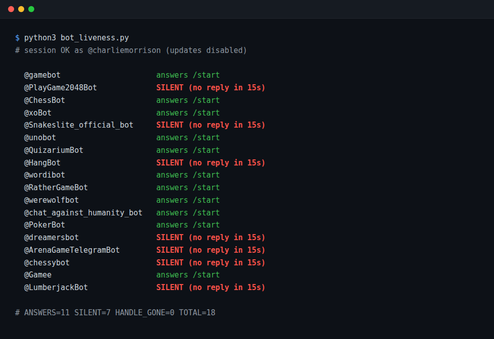

I Messaged 18 "Best" Telegram Game Bots. 7 Never Replied
Search for something like "best Telegram games" and you'll get a dozen confident listicles. Each one hands you a set of @handles: Hangman, 2048, Werewolf, Poker, Snake. What none of them tell you is which of those bots is still running.
That's not a nitpick. I run a Telegram game myself, and in May 2026 I switched off the chat-command backend behind it. The bot account stayed. Its profile page kept loading. My own article kept telling readers to add it to a group and type /play — into total silence, for weeks, before I noticed. Nobody complained, because a dead bot doesn't produce a complaint. It produces nothing.
So I stopped guessing and measured it. I took every bot recommended by three "best Telegram games" articles currently ranking on Google, sent each one a real /start from a real Telegram account, and waited to see what came back.
Eleven answered. Seven said nothing at all.
How the test worked
I wanted this to be boring and reproducible rather than clever, so the method is exactly what a person would do by hand — just automated so all 18 got identical treatment.
- The sample is the union of the bots recommended by three articles ranking for "best Telegram game bots" in July 2026: a 16-game roundup on LightXtremeVPN, MakeUseOf's "8 Fun Telegram Game Bots You Should Try", and Membertel's "5 best Telegram Game Bots". Deduplicated, that's 18 distinct handles. I didn't hand-pick them and I didn't drop any.
- The probe is one message:
/start, the command every Telegram bot is expected to handle, sent from my own account (@charliemorrison) rather than a fresh burner, so nothing could be blamed on an unusual account. - The wait is 15 seconds. That is extremely generous — a live bot replies in well under a second, because the reply is a program responding, not a person typing.
- The verdict is based on new inbound messages only. I record the newest message ID in the chat before sending, then count only replies newer than that. Otherwise an old message from a previous visit would make a dead bot look alive — which, on two of these chats, it would have.
- Pacing: 6–11 seconds of randomised delay between bots, so the run looks like a person poking around rather than a flood.
Here is the actual run:

The seven that said nothing
| Bot | Listed as | Result |
|---|---|---|
| @PlayGame2048Bot | 2048 Puzzle | Silent |
| @Snakeslite_official_bot | SnakeLite | Silent |
| @HangBot | Hangman | Silent |
| @dreamersbot | Dreamers | Silent |
| @ArenaGameTelegramBot | Arena Game RPG | Silent |
| @chessybot | Chessy | Silent |
| @LumberjackBot | Lumberjack | Silent |
Every one of those handles resolves. Open any of them in Telegram and you get a normal-looking bot profile with a name and a Start button. Press Start and the chat stays empty. There is no error, no "this bot is no longer available", no hint that you're talking to a switched-off machine. The most common reaction to that is to assume you did something wrong.
Worth flagging: Lumberjack is a special case that shows exactly how these lists rot. The standalone @LumberjackBot is silent — but LumberJack the game is still perfectly playable, because it lives inside @gamebot, which answered immediately. One article recommends the working route, another recommends a handle that leads nowhere, and both describe the same game. If you followed the second one you'd conclude the game is gone. It isn't.
The eleven that answered
These replied within the window, most of them instantly: @gamebot, @ChessBot, @xoBot, @unobot, @QuizariumBot, @wordibot, @RatherGameBot, @werewolfbot, @chat_against_humanity_bot, @PokerBot and @Gamee.
Two details are worth having before you pick one:
- Several are group-only, and that surprises people. Quizarium's reply to a private
/startis: "Yes, it's my command, but you can use it only within a group chat." Chat Against Humanity says the same in different words — you need a group and a couple of friends before anything happens. Not broken, just not a solo experience, which most roundups fail to mention. - @unobot's own first message points somewhere else: "Also check out @UnoDemoBot, a newer version of this bot with exclusive modes and features." The bot itself is telling you the recommendation is a version behind.
One caveat I'd rather state than hide: this is a snapshot taken on 28 July 2026. A bot that answered today can go quiet next month — that is the entire point of the exercise. Treat the list as a demonstration of the method, not as a permanent verdict.
Why bots die quietly
The reason is structural, and once you see it you can predict which recommendations will rot.
A Telegram bot is not a self-contained thing living on Telegram's servers. It's the Telegram-facing half of somebody's software. The platform's own documentation is blunt about the other half: "In order for a bot to work, set up a bot account with @BotFather, then connect it to your backend server via our API." That backend is a machine someone rents, maintains and pays for every month.
When the developer moves on — new job, lost interest, hosting bill no longer worth it — they stop paying for the server. They almost never delete the bot account, because deleting it takes deliberate effort and produces no benefit. So the account outlives the product. Telegram keeps rendering the profile from its own records, and your Start button keeps sending commands into a machine that is no longer there.
This isn't unique to Telegram, it's just unusually invisible there. Pew Research Center's 2024 study on digital decay found that "a quarter of all webpages that existed at one point between 2013 and 2023 are no longer accessible", and that 38% of pages from 2013 are gone. On the web, decay at least announces itself with a 404. A dead bot has no 404. It has an empty chat.
Which means 39% silent in this sample isn't a scandal — it's roughly what a decade of link rot looks like when it's applied to software that nobody can see rotting. The scandal is that lists keep recommending them without ever pressing Start.
The bug in my own test that nearly produced a fake result
I'll include this because it's the most useful thing I learned, and because the first version of this article would have been wrong.
My first run died four bots in. Everything after @ChessBot came back with the same error — TypeNotFoundError: Could not find a matching Constructor ID — and the naive reading was that 12 bots were unreachable. That would have been a much more dramatic headline and completely false.
What actually happened: my client library (Telethon 1.43.2) was receiving live account updates in the background, including an unrelated spam broadcast that used a newer Telegram data type than the library knows about. One unparseable object killed the connection's receive loop, and every later call inherited the corpse. The bots were fine. My tooling was lying to me.
The fix was one argument — receive_updates=False, so the server never pushes those updates to this client at all — and re-running gave clean results for 15 of 18. The last three still errored, so I re-probed those with a fresh connection each. All three came back conclusive: @Gamee alive, @chessybot and @LumberjackBot genuinely silent.
The 15-second check you can do yourself
You don't need any of my scripts. Before you trust a bot from any list, including mine:
- Open the bot and press Start.
- Count to fifteen.
- If nothing arrived, the backend is off. Move on — there is nothing to fix on your end.
- If it's a group game, add it to a group and run its start command there before inviting people. Several of these only wake up in groups.
The one thing that proves nothing is the bot's profile loading. Every dead bot in this test has a perfectly healthy profile page. Telegram serves that from its own database; it has no idea whether the developer's server is still switched on.
What this changed about the game I run
Watching my own bot go silent, then measuring how normal that is, is why my party game no longer depends on a backend at all. It's a Mini App: the questions and the game logic ship inside the page Telegram opens, so there is no server left to switch off. It also opens in a normal browser, which means it survives even if I lose interest entirely — the failure mode that killed seven bots above simply doesn't exist for it.
That's not a claim you should take on faith after an article about not taking claims on faith. Press Start and count to fifteen.
Test it yourself — it should answer instantly
Truth or Dare, Never Have I Ever and Would You Rather. 151 questions per language, English and Ukrainian, no signup, no backend to die.
Open the Party Game No Telegram? It runs in a browser too: charliemorrison.dev/party-gameFAQ
Why does a Telegram bot stop replying?
Because a bot is only the Telegram-facing half of the product. Telegram's documentation tells developers to connect a bot account to their backend server. When that server is switched off, unpaid for or abandoned, the bot account still exists and its profile still loads — but nothing answers your commands.
How do I tell if a bot is dead before trusting a recommendation?
Open it, press Start, wait about 15 seconds. A working bot answers almost instantly because the reply is automated. If nothing arrives, the backend isn't running. A profile page that loads normally proves nothing.
Do dead Telegram bots show an error message?
No, and that's what makes them hard to spot. No error, no warning, no retirement notice — you press Start and the chat stays empty, which most people read as their own mistake.
Which recommended game bots still work?
In this test, 11 of 18: GameBot, ChessBot, xoBot, unobot, QuizariumBot, wordibot, RatherGameBot, werewolfbot, chat_against_humanity_bot, PokerBot and Gamee. The seven silent ones were PlayGame2048Bot, Snakeslite_official_bot, HangBot, dreamersbot, ArenaGameTelegramBot, chessybot and LumberjackBot. Snapshot from 28 July 2026 — re-check before you rely on it.
Related reading
- Best Telegram party games and bots in 2026 — the roundup this test came out of, including why chat bots and Mini Apps fail differently.
- The Telegram tech quiz game — the same no-backend approach applied to a quiz.
- All the bots and Mini Apps I run — including the two I retired, marked as retired instead of quietly left up.